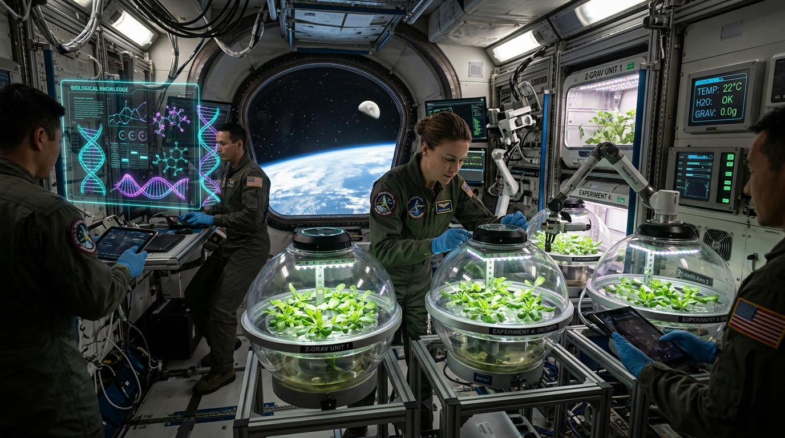

Synthesizing Decades of Space Biology for Artemis & Mars
Explore 608 peer-reviewed NASA space biology publications and 22,810 GeneLab transcriptomic records. Leverage relational knowledge graphs and automated semantic retrieval to identify biological countermeasures, uncover research gaps, and protect astronauts on long-duration interplanetary missions.
Core Space Bioscience Disciplines
Key investigation areas funded by the NASA Biological and Physical Sciences (BPS) Division
Hypothesis Formulation & Experimental Design Protocol
Generate structured, testable flight hypotheses by synthesizing evidence across 608 space biology investigations.
Scientific Consensus vs. Active Research Gaps in Space Biology
Summary of established mechanisms versus unresolved contradictions across flight and ground-analog studies.
| Biological System | Established Scientific Consensus | Active Research Gap / Contradiction | Flight Verification Protocol |
|---|---|---|---|
| Musculoskeletal System | 1.0–1.5% trabecular bone mineral density loss per month in microgravity via accelerated osteoclast resorption. | Rate of microstructural bone restoration upon return to 1g; reversibility of marrow adiposity under chronic GCR. | ISS Rodent Research (RR) |
| Plant Gravitropism | Statolith starch sedimentation is lost in zero-g; phototropism (blue light) and hydrotropism provide compensatory orientation. | Gravitational threshold acceleration required for normal root anchorage in Lunar (0.16g) vs. Martian (0.38g) gravity. | Artemis Lunar Base |
| Neuro-Ocular (SANS) | Cephalad venous fluid shift leads to chronic optic disc edema, globe flattening, and choroidal folds. | Genetic polymorphisms and 1-carbon metabolic variants explaining why only ~30% of long-duration crew develop severe SANS. | Choline & B-Vitamin Cohorts |
| Immunology | Suppression of cytotoxic T-cell activation and subclinical reactivation of latent herpesviruses (EBV, VZV). | Distinguishing psychological confinement and sleep disruption from direct microgravity and cosmic ray effects. | Isolation Analogs (CHAPEA) |
| Mitochondria & Omics | Elevated mitochondrial reactive oxygen species (ROS) and systemic markers of premature cellular senescence. | Bioavailability and blood-brain barrier permeability of oral mitochondrial antioxidants under intracranial hypertension. | MitoQ Flight Trials |
Bioscience Portfolio Analytics & Strategic Opportunity Matrix
Assess research portfolio allocations, identify under-researched hazards, and optimize NASA Task Book solicitations.
Research Volume by Discipline (608 Studies)
Flight vs. Ground Analog Distribution
Strategic Grant Solicitations & Critical Knowledge Gaps
| Priority Level | Critical Research Gap | Mission Impact | Recommended Task Book Action |
|---|---|---|---|
| CRITICAL | Deep Space GCR + Microgravity Synergy | High uncertainty regarding dual chronic radiation and microgravity on vascular calcification & neurocognition. | Solicit combined NSRL accelerator and clinostat multi-factor payloads. |
| CRITICAL | Multi-Generational Seed-to-Seed Stability | Current crop data is limited to 1-2 generations. Epigenetic drift in space-grown crops may jeopardize food sustainability. | Fund 5-generation automated growth chamber experiments on commercial LEO stations. |
| HIGH | Microbiome Virulence & Biofilm Thickening | Water loop contamination on ISS reveals bacterial biofilm resilience and accelerated horizontal gene transfer. | Fund phage-based disinfectants and antimicrobial nano-coatings for ECLSS. |
| MANAGED | Musculoskeletal Resistive Exercise | ARED exercise protocol is validated for 6-month ISS stays, but bulky machinery cannot fit in compact Mars vehicles. | Technology transition grants for compact motorized flywheel & electrical muscle stimulators. |
Moon-to-Mars Exploration Biological Risk & Countermeasure Matrix
Operational countermeasure protocols aligned with NASA Artemis Lunar Base and Mars 1,000-Day Class Exploration architectures.
Pre-Flight Baseline (T - 180 Days)
- High-resolution bone microarchitecture (HR-pQCT & DEXA scan)
- Optical Coherence Tomography (OCT) retinal nerve fiber layer mapping
- Individual aerobic VO2 max & musculoskeletal torque baseline
- Microbiome & immune biomarker genomic profiling
Mars In-Transit (180 Days Zero-G)
- Daily 2.0 hrs: High-intensity interval & resistive exercise (flywheel)
- Nocturnal 8.0 hrs: Lower Body Negative Pressure (LBNP) suit sleep chamber
- Radiation Storm Shelter: Polyethylene water jacket retreat during Solar Particle Events
- Nutritional: MitoQ, Omega-3, Potassium Citrate (kidney stone prevention)
Mars Surface Operations (500 Days at 0.38g)
- Regolith-shielded subterranean habitat module (>65% GCR attenuation)
- Fresh salad crop supplementation from automated aeroponic chambers
- Partial gravity locomotion & axial loading compression garment
- Active airborne dust filtration & toxic perchlorate monitoring
Post-Landing Re-adaptation (Earth Return)
- Neurovestibular balance recovery & orthostatic intolerance rehab
- Targeted antiresorptive therapy (bisphosphonates / sclerostin Ab)
- Longitudinal immune reconstitution monitoring
Select Any Entity
Pathway InspectorClick any space stressor, discipline, organism, or countermeasure to isolate and inspect its full relational cascade.
Connected Literature & Relationships:
- Select a card in the cascade to view evidence.
NASA GeneLab Microarray Differential Expression (GLDS Study)
Transcriptomic analysis of Arabidopsis thaliana (Col-0 WT vs act2-3 mutant) comparing Flight vs Synchronized Ground Control.
Top Spaceflight-Dysregulated Genes (p < 0.05)
| TAIR ID | Gene Symbol | Description | Log2 Fold Change | P-Value | Regulation in Spaceflight |
|---|
NASA Space Biology 608 Publications Interrogator
Interactive search and structured filtering across the official NASA GeneLab space biology publication catalog.
AI Space Biology Synthesis & Retrieval Engine
Query the comprehensive database of 608 NASA studies and the GeneLab transcriptomics repository.
Ready to Synthesize Space Biology Insights
Enter a research query regarding space radiation, microgravity, plant growth, cardiovascular deconditioning, or countermeasures to receive a structured, citation-backed synthesis.